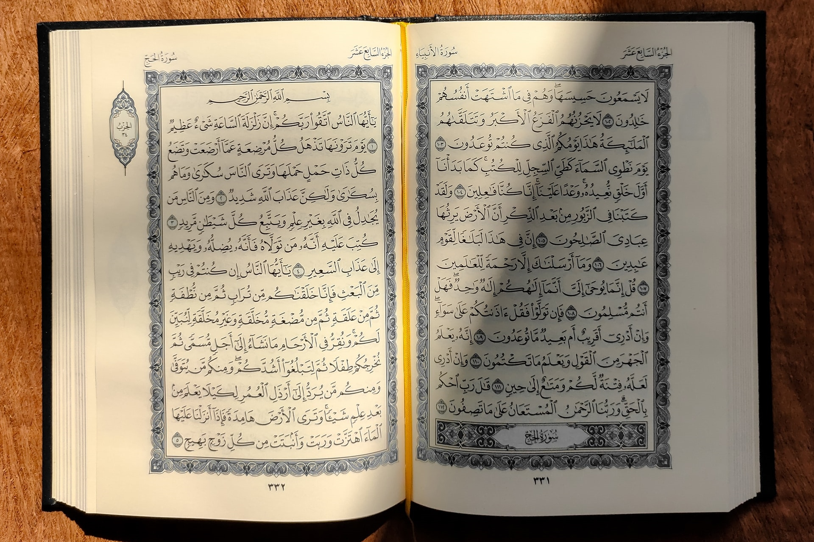

Doa Sehari-hari
Doa merupakan permohonan kepada Allah yang di sertai kerendahan hati untuk mendapatkan suatu kebaikan dan keselamatan yang berada di sisi-nya.
Dalam menjalani kehidupan sehari-hari setiap orang akan berdoa agar apa yang dilakukan senantiasa berjalan lancar. Doa memiliki keutamaan dan faedah yang tak terhitung, kedudukannya sebagai satu bentuk ibadah sudah cukup menjadi bukti keutamaannya.
Berikut ini merupakan kumpulan doa sehari-hari beserta artinya:
1. Doa untuk kedua orang tua
اللَّهُمَّ اغْفِرْ لِى وَلِوَ الِدَىَّ وَارْ حَمْهُمَا كَمَا رَبَّيَا نِى صَغِيْرًا
Allahummagh firlii wa liwaa lidhayaa warham humaa kamaa rabbayaa nii shaghiraa
Artinya: "Ya allah ampunilah semua dosa-dosaku dan dosa-dosa kedua orang tuaku dan sayangilah mereka sebagaimana mereka menyayangiku pada waktu kecil."
2. Doa sebelum belajar
رَضِتُ بِااللهِ رَبَا وَبِالْاِسْلاَمِ دِيْنَا وَبِمُحَمَّدٍ نَبِيَا وَرَسُوْلاَ رَبِّ زِدْ نِيْ عِلْمًـاوَرْزُقْنِـيْ فَهْمًـا
Radhitu billahirabba, wabil islaamidina, wabi-muhammadin nabiyyaw warasula, rabbi zidnii 'ilmaa warzuqnii fahmaa
Artinya: "kami rida Allah SWT sebagai Tuhanku, Islam sebagai agamaku, dan nabi muhammad sebagai nabi dan rosul, ya allah, tambahkanlah
kepadaku ilmu dan berikanlah aku pengertian yang baik."
3. Doa sesudah belajar
اَللّٰهُمَّ اِنِّى اِسْتَوْدِعُكَ مَاعَلَّمْتَنِيْهِ فَارْدُدْهُ اِلَىَّ عِنْدَ حَاجَتِىْ وَلاَ تَنْسَنِيْهِ يَارَبَّ الْعَالَمِيْنَ
Allaahumma innii istaudi'uka maa 'allamtaniihi fardud-hu ilayya 'inda haajatii wa laa tansaniihi yaa rabbal 'alamiin
Artinya: " Ya Allah, sesungguhnya kutitipkan kepadamu apa yang telah Engkau ajarkan kepadaku, maka kembalikanlah dia kepadaku disaat aku membutuhkannya.
Janganlah Engkau buat aku lupa kepadanya, wahai Tuhan pemelihara alam."
Quotes Islam

Sebagai Muslim yang beriman, kamu memiliki banyak sumber yang dapat menguatkanmu. Kamu dapat membaca Al-Qur'an serta hadis yang Allah berikan untuk menjadi tuntunan bagi umat-Nya.
Selain itu, coba menyampaikan isi hatimu kepada Allah SWT dalam salat karena sejatinya Allah sangat senang ketika ada hamba-Nya yang bersujud memohon bantuan kepada-Nya.
Tetap semangat dan terus berjuang hingga hal yang terbaik dapat kamu raih. Iman yang kukuh dapat menjadi fondasi kuat agar kamu tidak mudah menyerah dan berhenti di tengah jalan.
Berikut ini adalah kata-kata bijak dari tokoh-tokoh muslim yang menginspirasi:
- "Hiburlah hatimu, siramilah ia dengan percikan hikmah, seperti halnya fisik, hati juga merasakan letih."-Ali Bin Abi Thalib
- "Jangan katakan pada Allah " Aku punya masalah besar" tapi katakan pada masalah " Aku punya Allah yang maha besar."-Ali Bin Abi Thalib
- "Jadilah manusia yang baik dalam pandangan Allah. Jadilah manusia yang buruk dalam pandangan sendiri. Jadilah manusia yang biasa dalam pandangan orang lain." – Ali bin Abi Thalib
- "Jangan membenci siapapun, tidak peduli berapa banyak mereka bersalah padamu." – Ali bin Abi Thalib
- "Bukan kesulitan yang membuat kita takut, tapi ketakutan yang membuat kita sulit." – Ali bin Abi Thalib
- "Berpikirlah positif, tidak peduli seberapa keras kehidupanmu." – Ali bin Abi Thalib
- "Jikalau kita letih karena kebaikan, maka sesungguhnya keletihan itu akan hilang dan kebaikan akan kekal. Namun jikalau kita bersenang-senang dengan dosa, maka sesungguhnya kesenangan itu akan hilang dan dosa itu akan kekal." - Umar bin Khattab
- "Jangan bersedih atas apa yang telah berlalu, kecuali kalau itu bisa membuatmu bekerja lebih keras untuk apa yang akan datang."- Umar bin Khattab
- "Perbanyaklah mengingat Allah, karena itu adalah obat. Jangan buat dirimu terlalu banyak mengingat manusia, karena itu adalah penyakit." - Umar bin Khattab
- "Jika engkau sudah berada dijalan yang benar menuju Allah, maka berlarilah. Jika sulit bagimu maka berlari kecillah. Jika kamu lelah berjalanlah.
jika itupun tidak mampu, merangkaklah. Namun jangan berbalik arah atau berhenti."- Imam Syafi'i
- "Jagalah shalatmu. Karena saat kamu kehilangan shalat, maka kamu akan kehilangan segalanya." - Umar bin Khattab
- "Memang sulit untuk bersabar, tapi menyia-nyiakan pahala dari sebuah kesabaran itu jauh lebih buruk."-Abu Bakar Ash-Shiddiq
- "Aku tidak menganggapmu berhasil dalam suatu pencapaian tertentu hingga Allah mengujimu dengan cobaan terakhirnya."-Usman Bin Affan
Kutipan Ayat Al-Quran
Al-Quran adalah pedoman hidup umat Islam, di dalamnya terdapat berbagai pesan serta tuntunan yang dapat dijadikan sebagai pembimbing dalam menjalani kehidupan. Setiap ayat yang ada di dalam Al-Qur'an mengandung pembelajaran bagi umat Islam, dan berkaitan erat dalam kehidupan sehari-hari.
Bagi umat Muslim yang sedang bingung dalam menyelesaikan suatu permasalhan, sedang dirundung kesedihan, dalam kebimbangan, atau yang lainnya, bacalah Al-Quran dan kamu akan mendapatkan jawaban serta pentunjuk.
Allah SWT menjanjikan surga bagi hamba-nya yang senantiasa dengan ikhlas menghafal ayat-ayat Al-Quran dan menyebarkan pesan baiknya.
Alquran memberi petunjuk jalan yang lurus dan memberi bimbingan kepada umat manusia di dalam menempuh perjalanan hidupnya, agar selamat di dunia dan di akhirat. Selain berisi nasihat dan ajaran Islam, ayat-ayat dalam Al-Quran juga tersusun begitu indah. Banyak kata-kata bijak yang dapat diambil sebagai pelajaran.
Ini beberapa Ayat Alquran:
1. Al-Baqarah 286

Al-Baqarah Ayat 286
لَا يُكَلِّفُ ٱللَّهُ نَفْسًا إِلَّا وُسْعَهَا ۚ لَهَا مَا كَسَبَتْ وَعَلَيْهَا مَا ٱكْتَسَبَتْ ۗ رَبَّنَا لَا تُؤَاخِذْنَآ إِن نَّسِينَآ أَوْ أَخْطَأْنَا ۚ رَبَّنَا وَلَا تَحْمِلْ عَلَيْنَآ إِصْرًا كَمَا حَمَلْتَهُۥ عَلَى ٱلَّذِينَ مِن قَبْلِنَا ۚ رَبَّنَا وَلَا تُحَمِّلْنَا مَا لَا طَاقَةَ لَنَا بِهِۦ ۖ وَٱعْفُ عَنَّا وَٱغْفِرْ لَنَا وَٱرْحَمْنَآ ۚ أَنتَ مَوْلَىٰنَا فَٱنصُرْنَا عَلَى ٱلْقَوْمِ ٱلْكَٰفِرِينَ
Artinya: "Allah tidak membebani seseorang melainkan sesuai dengan kesanggupannya. Ia mendapat pahala (dari kebajikan) yang diusahakannya dan ia mendapat siksa (dari kejahatan) yang dikerjakannya. (Mereka berdoa): "Ya Tuhan kami, janganlah Engkau hukum kami jika kami lupa atau kami tersalah. Ya Tuhan kami, janganlah Engkau bebankan kepada kami beban yang berat sebagaimana Engkau bebankan kepada orang-orang sebelum kami. Ya Tuhan kami, janganlah Engkau pikulkan kepada kami apa yang tak sanggup kami memikulnya. Beri maaflah kami; ampunilah kami; dan rahmatilah kami. Engkaulah Penolong kami, maka tolonglah kami terhadap kaum yang kafir"." (Q.S Al-Baqarah: 286)
Makna dari ayat ini adalah saat kita merasa ujian yang kita terima sangat berita, percayalah kita jauh lebih kuat dari masalah tersebut. Kita pasti bisa menyelesaikannya. Sebab, Allah SWT tidak akan memberikan ujian berat yang melebihi kemampuan kita.
Surat Al Baqarah ayat 286 ini menjelaskan dalam mencapai tujuan hidup itu, manusia diberi beban oleh Allah sesuai kesanggupannya, mereka diberi pahala lebih dari yang telah diusahakannya dan mendapat siksa seimbang dengan kejahatan yang telah dilakukannya.
2. Al-Insyirah ayat 5-6
Al-Insyirah ayat 5-6
فَإِنَّ مَعَ ٱلْعُسْرِ يُسْرًا. إِنَّ مَعَ ٱلْعُسْرِ يُسْرًا
Artinya: "Karena sesungguhnya sesudah kesulitan itu ada kemudahan, sesungguhnya sesudah kesulitan itu ada kemudahan." (Q.S. Al-Insyirah: 5-6)
makna dari ayat ini adalah Allah mengungkapkan bahwa sesungguhnya didalam setiap kesempitan, terdapat kelapangan, dan didalam setiap kekurangan sarana untuk mencapai keinginan, terdapat juga jalan keluarnya.
Maka tetaplah optimis dan berharap pada pertolongan Tuhanmu, saat mengalami ujian hidup yang begitu berat, percayalah situasi tersebut tidak akan berlangsung selamanya. Allah SWT sudah menjaminnya dalam Surat Al-Insyirah ayat 5-6.\
Dalam surat tersebut, Allah SWT menjanjikan bahwa setelah kesulitan yang kamu alami, akan mendapatkan kemudahan.
3. Ar-Rahman ayat 60

Ar-Rahman ayat 60
هَلۡ جَزَآءُ الْاِحۡسَانِ اِلَّا الۡاِحۡسَانُۚ
Artinya: "Tidak ada balasan kebaikan kecuali kebaikan(pula)."(Q.s. Ar-Rahman: 60)
Tafsir as-Sa'di / Syaikh Abdurrahman bin Nashir as-Sa'di, pakar tafsir abad 14 H
"Tidak ada balasan kebaikan kecuali kebaikan (pula)," maksudnya, tidak ada balasan bagi sesorang yang telah beribadah kepada sang pencipta dengan baik dan memberikan manfaat bagi hambanya yang lain, melainkan dia akan dibalas dengan kebaikan (pula) dengan pahala yang berlimpah.